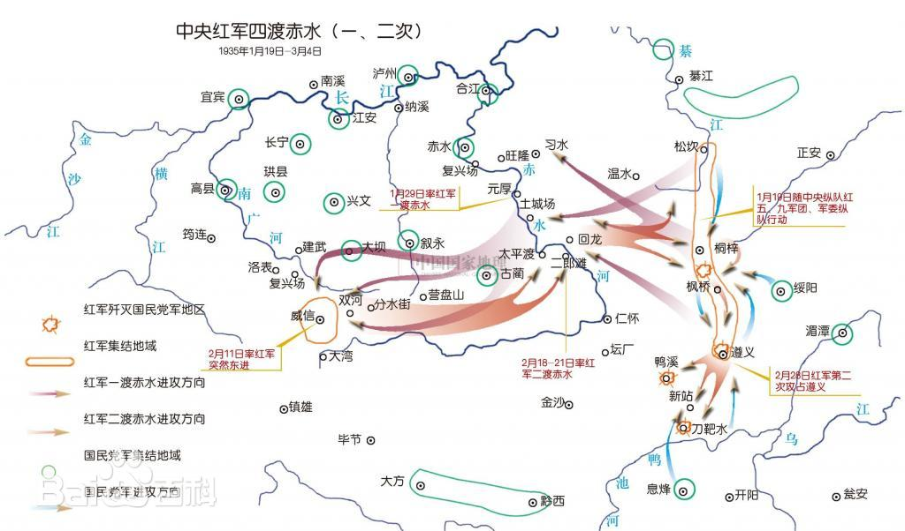

The Four Crossings of the Chishui River Campaig
During the period of the Land Revolution, the Central Red Army engaged in a series of mobile warfare
battles against the Kuomintang forces in the basin of the Chishui River, located at the intersection of
Guizhou, Sichuan, and Yunnan provinces during their Long March.

The Four Crossings of the Chishui River Campaign was a decisive mobile battle that took place after the
Zunyi Conference, amid the perilous circumstances of the Central Red Army being pursued and besieged by
hundreds of thousands of Kuomintang troops. Under the leadership of Mao Zedong, Zhou Enlai, and Zhu De,
the Red Army adopted a highly mobile strategy, maneuvering freely across the vast areas of the
Sichuan-Guizhou-Yunnan border. They actively sought opportunities for engagement, effectively mobilizing
and destroying enemy forces, and ultimately thwarted Chiang Kai-shek’s ambitious plan to encircle the
Red Army in this region. This campaign resulted in a strategically significant victory during their
retreat.
Over the course of three months, Mao Zedong directed the Central Red Army in six crossings of three
rivers, skillfully navigating between the encircled positions of the Kuomintang forces. By constantly
seizing opportunities for battle, they managed to inflict substantial losses on the enemy, firmly
establishing the initiative on the battlefield. This campaign stands as a brilliant example in the
history of the Long March, showcasing how a smaller force can triumph over a larger one, turning a
passive situation into an active one.